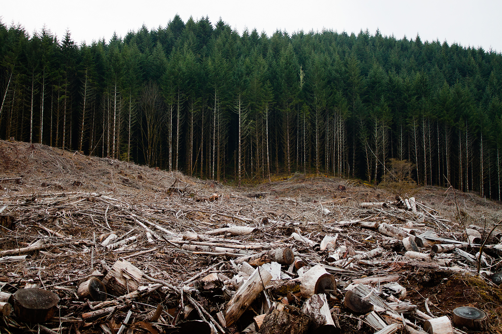

Home
Introduction
Fossil Fules
Clearing Forest
Fertilization
Global Warming
Conclusion
The clearing forests does not just destroy the habitats of many species but it also worsens global warming. Chopping down vast swath of the forest, known as clear cutting or deforestation , adds to the problem. Such drastic removal of trees in being driven by the agriculture, timber and other industries. Trees are needed because they absorb carbon dioxide. Fewer trees means more of the gas hangs in the atmosphere, trapping more heat. According to the americanforest.org one mature trees absorbs carbon dioxide at a rate of 48 pounds per year. In one year, an acre of forest can absorb twice the carbon dioxide produced by the average car annual mileage. Another reason why cutting trees should stop is because when cutting down large areas of the forest, animals habitats get destroyed, killing their prey or the plant they eat from, they then starve to death.When doing this an entire species could go extinct or become endangered.
